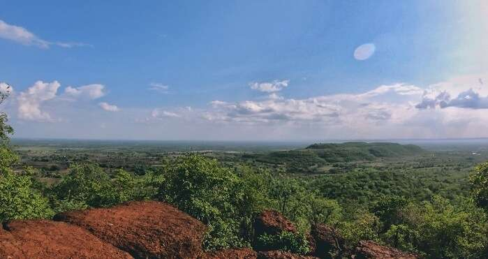
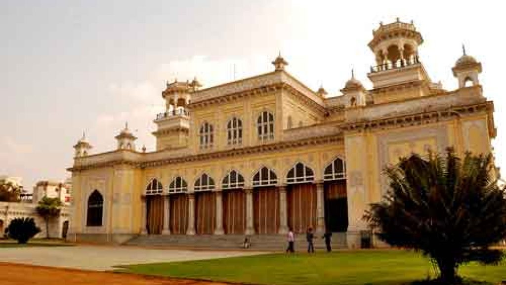
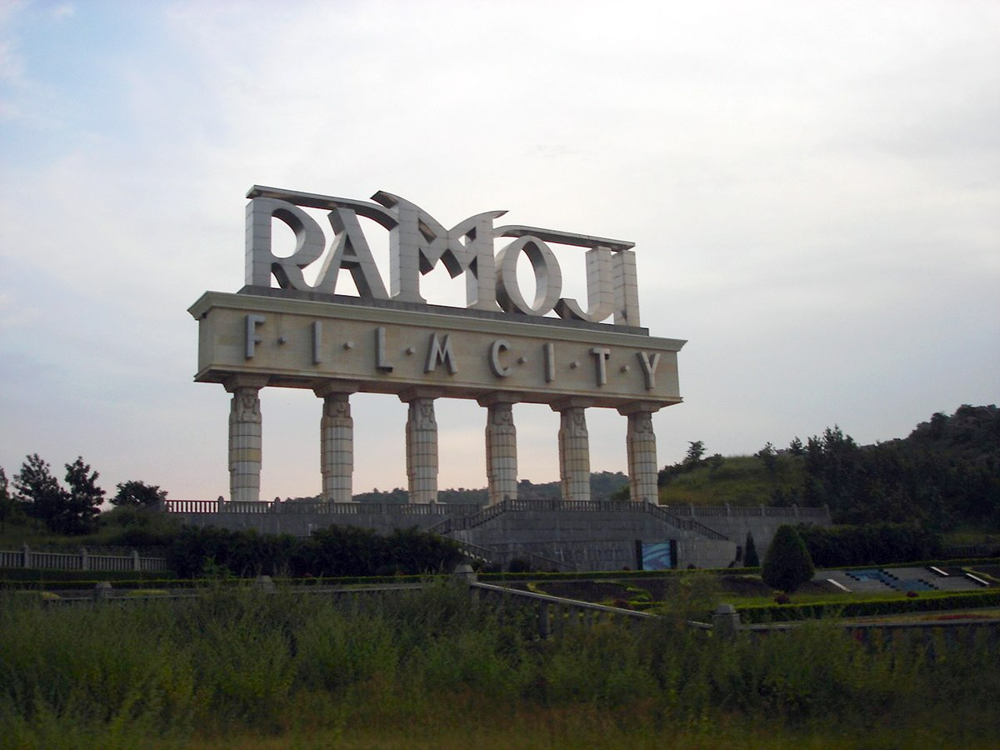

ANANTHA GIRI HILLS
Ananthagiri Hills is located in Vikarabad district, Telangana, India. The water flows from these hills to Osman Sagar is also known as Gandipet lake and Himayathsagar. It is one of the dense forests in Telangana. Ananthagiri Temple is located in this forested area.
CHOWMAHALLA PALACE
Chowmahalla Palace or Chowmahallat is the palace of the Nizams of Hyderabad State in Hyderabad, Telangana, India. It was the seat of the Asaf Jahi dynasty and was the official residence of the Nizams of Hyderabad while they ruled their state.
GOLCONDA FORT

Golconda Fort is located in the western part of Hyderabad city and is about 9 km from the Hussain Sagar Lake. The outer fort occupies an area of three square kilometers, which is 4.8 kilometers in length. It was originally known as Mankal, and built on a hilltop in the year 1143.
KBR NATIONAL PARK

The entire palace complex area was declared as a National park by the Andhra Pradesh state government after getting permission from the central government in the year 1998. This gave control of the major part of the land to the forest department and the Nizam was left with the control of only about 11 acres.
RAMOJI FILM CITY
Ramoji Film City is an integrated film studio complex located in Hyderabad, India. Spread over 1,666 acres, it is the largest integrated film city in the world and as such has been certified by the Guinness World Records as the largest studio complex in the world.